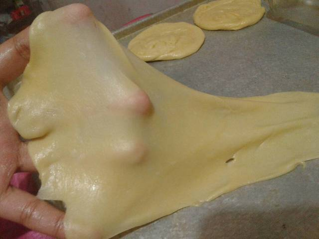

Ulemi sampai kalis(aku pake tangan) jangan takut jika adonan lengket ya, lumuri tangan sesekali dg tepung(tapi jangan menambahkan tepung) uleni terus sampai adonan kalis
Kalisnya adonan canai tidak sekalis adonan roti ya, kira2 seperti ini sudah cukup
Bagi adonan menjadi 12 bagian. Kalau mau lebih besar bagi jadi 10 bagian
Lumuri/rendam adonan dengan minyak goreng (supaya adonan tidak kering) diamkan 1-3 jam (boleh semalaman asal ditutup serbet)
Setelah direndam minyak, adonan akan lebih lentur dan kalis dari pada sebelumya, mirip adonan kulit martabak

Ambil 1 adonan. Pipihkan melebar setipis mungkin. Olesi dengan margarin cair. Gulung memanjang. Linting berlawanan arah spt konde. Tumpuk kedua bagian, terakhir pipihkan lagi. Silahkan gambarnya dilihat (urutannya dari kiri ke kanan lalu balik lagi ke gambar paling kiri) semoga ngerti maksutnya mudah kok
Panaskan teflon dengan api kecil aja. Panggang adonan dengan sekali balik, tekan-tekan supaya matangnya rata. Kalau mau dikasih butter akan lebih gurih canainya, enggak juga gapapa
Canai siap disajikan.. dengan kuah kari atau topping messes, keju serta SKM juga enak
Kalau mau dibuat frozen bisa juga lho. Caranya: adonan canai yg sudah dibentuk spt ini dipanggang 1/2 matang, tata diwadah bertutup rapat atau masukkan plastik kedap udara. Simpan difrezeer sampai beku. Kalau mau makan tinggal ditawing, lalu dipanasin diatas teflon sebentar. Canai beku bisa tahan sampe 2 mingguan, mudah kan😊